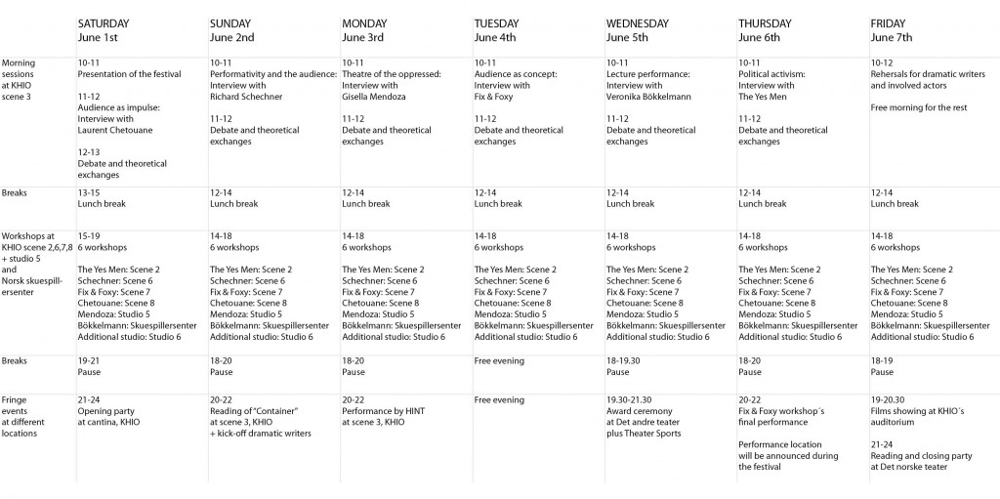

Oslo International Acting Festival 2013 - 30 plasser med rabatt!
- Dato:
- 01.06.2013 til 07.06.2013
- Start kl :
- 09:00
- Slutt kl :
- 22:00
- Pris:
- 2500,-
- Adresse:
- Teaterhøgskolen v KHIO og Skuespillersenteret, Oslo

ABOUT THE FESTIVAL
(For norsk beskrivelse se lenger ned.)
OIAF is an international arena for theoretical and empirical exchange on acting methods and performative approaches organized by The Academy of Theatre, Oslo National Academy of The Arts and The Norwegian Actors' Center.
See http://osloactingfestival.com/ for more information.
Theme: The audience
This year the festival will take place from the 1st to the 7th June, under the heading "the audience". The festival shall question and explore working methods and acting techniques related to the audience: What happens when you include the audience already at the development stage? How can an actor work with his relationship to the audience? How can you create performances without forgetting the audience during the development process? What does “enter into a dialogue with the audience” actually mean? How become aware of the audience’s role in the theatre setting?
How to apply
The Norwegian Actors' Centre has 30 subsidized places available for professional actors. Full prize for the festival is 4500,- NOK. We subsidize that with 2000,-, so that the 30 participants who get a place through us only pay 2500,-.
To apply, please fill out the form under Påmelding, and send your top three workshop choices to post (a) skuespillersenter.no. You will get a place on one of your three choices, provided there are places left. Please include an up to date CV when you apply.
If you are an overseas applicant, click here for more useful information.
Daily structure
10.00 - 11.00 Interview with a practitioner
Short break
11.00 - 12.00 Panel debate
Lunch break
14.00 - 18.00 Workshops
Dinner break
19.00 - 22.00 Performances, artist talks, parties and other activities
ABOUT THE WORKSHOPS
The following artists and pedagogues will lead a workshop each throughout the week:
Performativity and the audience:
Richard Schechner – The first director fof the legendary Wooster groups and on of the most central theoreticians and practicioners in American performance studies. Schechner has written a number of important books on performativity, theatre and society, and is today professor at Tisch School of the Arts, New York. The workshop will be centred around the relationship between the actor, the theatre and the audience.
Political activism:
The Yes Men – American activist group who often hit the news pretending to speak on behalf of large corporations. Through this method, they have several times raised important issues in the media. One example was their stunt on CNN where they pretended to be spokesmen for Dow Chemical, making statements about their poisoning of rivers in India. This is a workshop about political activism using the tools of the actor and the theatre, and about invisible theatre as an activist strategy.
Audience as impulse:
Laurent Chetouane – Originally a French choreographer, he now directs shows on all continents. Chetouane has become famous for making performances that demand the actor to listen intensly, both to the other actors and to the audience. A workshop about letting the actor’s impulse for text and action arise from the dialogue with the audience.
Audience as concept:
Fix & Foxy – This Danish theatre company use the audience as the starting point for their innovative performance concepts. Both their staging of Leni Riefenstahls Nazi propaganda film “Triumph of the will” with the audience playing the masses and their version of “Pretty Women” where they hired an actual prostitute for the night, and got her to play the main part, received considerable attention in Denmark. A workshop about developing concept based, audience oriented performances.
Theatre of the oppressed:
Gisella Mendoza – South American theatre maker who worked closely with Augusto Boal developing the theatre of the oppressed. The so called «forum theatre» had pedagogical and political aims, exploring the possibility of participating in society and changing it, seeking to empower the public. The workshop deals with how the audience can become an active, acting part of a theatre performance.
Lecture performance:
Veronika Bökelmann – Bökkelmann is a German theatre artist who has produced a number of documentary and site specific performances in Europe and South America. A lecture performance is a genre which combines the aesthetics and purpose of theatre and lectures. The form makes the audience into recipients of knowledge as much as of an aesthetic experience. The workshop will focus on the production of lecture performances and site-specific documentary theatre.
Detailed program:
{kind=link}
Download the detailed program here. The program is subject to change.
------------------------------------------------------------------------------------------
OM FESTIVALEN
OBS - Alle workshopene vil holdes på engelsk!
OIAF er en arena for utforskning og formidling av skuespillkunst. Festivalen er åpen for skuespillerstudenter samt film- og scenekunstnere fra Norge og resten av verden.
Påmelding skjer på Norsk skuespillersenters hjemmesider eller via festivalens egne sider. Festivalen organiseres av Teaterhøgskolen ved Kunsthøgskolen i Oslo og Norsk skuespillersenter, i samarbeid med en rekke andre aktører i inn- og utland. 2012 var festivalens første år, hvor tema var «metoder og teknikker».
Se http://osloactingfestival.com/ for mer informasjon.
Årets tema
Oslo International Acting Festival 2013 strekker seg fra 1-7 juni, og har som tema «publikum». Årets festival skal problematisere og undersøke arbeidsmetoder og skuespillerteknikkers forhold til publikummet: Hva skjer når man tar inn publikum allerede i utviklingen av en forestilling? Hvordan kan en skuespiller arbeide med sitt forhold til publikum? Hvordan kan man skape forestillinger uten å glemme publikum underveis i arbeidsprosessen? Hva vil det si å være i dialog med publikum som skuespiller? Hvordan bli bevisstgjort publikums rolle på teateret?
Festivalen vil bestå av seminarer, workshop, debatter og forestillinger. På formiddagen er det felles konferanse for alle deltakere, deretter følger deltakerne hver sin workshop. Mange av kveldene er det også forestillinger og debatter.
Påmelding
For å melde deg på, fyll ut skjemaet under Påmelding og send dine tre workshopønsker i en epost til post (a) skuespillersenter.no. Vi vil etterstrebe å gi deg plass på ett av dine tre ønsker.
Husk å legge ved en oppdatert CV ved påmeldingen.
Full pris for festivalen er 4500,-. Norsk Skuespillersenter subsidierer 30 plasser med 2000,-, slik at du kun betaler 2500,-.
Dagsstruktur
10.00 - 11.00 Intervju med en utøver
Kort pause
11.00 - 12.00 Paneldebatt
Lunsjpause
14.00 - 18.00 Workshops
Middagspause
19.00 - 22.00 Forestillinger, fest, samtaler og annet program
OM WORKSHOPENE
Følgende teaterkunstnere og pedagoger holder hver sin workshop gjennom uka:
Performativtet og publikum:
Richard Schechner – Wooster groups første regissør og en av de mest sentrale premissleverandører til amerikanske performance-studier. Schechner er forfatter av rekke sentrale bøker om performativitet, teater og samfunn, og er i dag professor ved Tisch School of the Arts, New York. Workshop om forholdet mellom skuespilleren, teateret og publikum.
Politisk aktivisme:
The Yes Men – amerikanske aktivistgruppe som driver skjult politisk teater. De har med sine metoder satt agenda i media flere ganger, bl.a. gjennom å komme på CNN som «talsmenn» for Dow Chemical og snakke om katastrofale giftutlipp i India. Workshop om politisk aktivisme med bruk av teaterets og skuespillerens virkemidler og skjult teater som aktivistisk strategi.
Publikum som impuls:
Laurent Chetouane – opprinnelig fransk koreograf og regissør, som nå setter opp forestillinger på alle kontinenter. Chetouane har gjort seg bemerket med forestillinger som krever evne til intens lytting fra skuespilleren, både mot medspiller og publikum. Workshop om det å la skuespillerens impulser til tekst og handling komme i dialog med publikum.
Publikum som konsept:
Fix & Foxy – dansk teatergruppe som skaper forestillinger basert på konsepter med utgangspunkt i publikum. Både deres iscenesettelse av Leni Riefenstahls nazipropagandafilm «Viljens Triumf» med publikum i rollen som massene, og deres nyinnspilling av «Pretty Woman» med en for kvelden hyret prostituert til å spille hovedrollen, vakte betydelig oppsikt i Danmark. Workshop om å utvikle konseptbaserte publikumsorienterte forestillinger.
De undertryktes teater:
Gisella Mendoza – Sør-Amerikansk teaterkunstner som jobbet tett på Augosto Boal i utviklingen av «de undertryktes teater». «Forumteateret» hadde pedagogiske og politiske siktemål, hvor muligheten for deltakelse og endring av samfunnet skulle utforskes og muliggjøres. Workshopen i forumteater handler om hvordan publikums kan bli en aktivt handlende part i en teaterforestilling.
Lecture performance:
Veronika Bökelmann – tysk teaterkunstner som gjort en lang rekke dokumentar og site specific-forestillinger i Europa og Sør-Amerika. Lecture performance er en form som henter fra både teaterets estetikk og forelesningformens formål, en form som gjør publikum til like mye mottakere av kunnskap som av en estetisk opplevelse. Workshopen har fokus på utforming av lecture performance og site-specific dokumentarteater.